Week 3 — Lecture notes
Linear, time-invariant systems
Other formats:
📄 PDFGoals
① Convolution: calculate the output of an LTI system by breaking the input into pieces.
② Impulse response: complete representation of an LTI system.
③ LTI systems preserve frequency.
④ ODE descriptions of LTI systems.
⑤ Interconnections of systems.
Recap
Linear \iff superposition
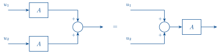
add/scale input \iff add/scale output
① Convolution
If we apply regular impulses to a system, what do we get at the output?
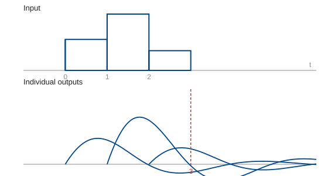
What do we have at time 3?
h started at \tau = 2 and gone 1 time step: \;\overbrace{h(t-2)}^{h(1)}\,u(2)\;
h started at \tau = 1 and gone 2 time steps: \;\overbrace{h(t-1)}^{h(2)}\,u(1)\;
h started at \tau = 0 and gone 3 time steps: \;\overbrace{h(t-0)}^{h(3)}\,u(0)\;
So for fixed t: flip h and shift by t, then for each \tau \in [0, t], multiply with u(\tau) and add to total.
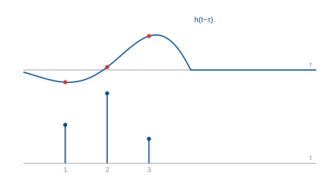
This gives the output to a sum of impulses. It turns out we can approximate any input as such a sum.
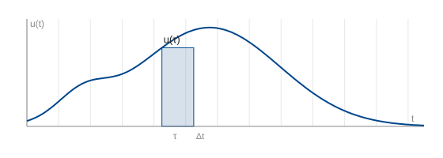
Area of the shaded rectangle: u(\tau)\,\Delta t.
We can represent this area by an impulse, \delta(t-\tau)\,u(\tau)\,\Delta t.
These impulses for each rectangle approximate u(t), just like a Riemann integral:
u(t) \approx \sum_{k=-\infty}^{\infty} \delta(t-k\Delta t)\,u(k\Delta t)\,\Delta t \qquad(1)
The corresponding output is a sum of delayed impulse responses that approximates the output of the system:
y(t) \approx \sum_{k=-\infty}^{\infty} h(t-k\Delta t)\,u(k\Delta t)\,\Delta t. \qquad(2)
What happens to (1) in the limit \Delta t \to 0?
\sum_{k=-\infty}^{\infty} \delta(t-k\Delta t)\,u(k\Delta t)\,\Delta t \;\longrightarrow\; \int_{-\infty}^{\infty}\! \delta(t-\tau)\,u(\tau)\,\mathrm{d}\tau
with k\Delta t \to \tau and \Delta t \to \mathrm{d}\tau. So we have
\boxed{\,u(t) = \int_{-\infty}^{\infty}\! \delta(t-\tau)\,u(\tau)\,\mathrm{d}\tau\,}
This is the sifting property! Read backwards, it says that the signal u(t) is equal to an integral of impulses with amplitude u(\tau)\,\mathrm{d}\tau.
What about (2) in the limit \Delta t \to 0?
\sum_{k=-\infty}^{\infty} h(t-k\Delta t)\,u(k\Delta t)\,\Delta t \;\longrightarrow\; \int_{-\infty}^{\infty}\! h(t-\tau)\,u(\tau)\,\mathrm{d}\tau.
So we have:
\boxed{\,y(t) = \int_{-\infty}^{\infty}\! h(t-\tau)\,u(\tau)\,\mathrm{d}\tau\,}
The response to any input u(t) is determined by the impulse response! We will look more closely at how to calculate the impulse response soon, but first let’s understand the expression above.
Convolution: definition and properties
\boxed{\;\text{The operation}\quad h * u := \int_{-\infty}^{\infty}\! h(t-\tau)\,u(\tau)\,\mathrm{d}\tau\;}
is called convolution.
Basic properties of convolution:
1. h * u = u * h (commutativity)
Proof:
h * u = \int_{-\infty}^{\infty}\! h(t-\tau)\,u(\tau)\,\mathrm{d}\tau.
Let T = t - \tau. Then \tau = t - T and \mathrm{d}T = -\mathrm{d}\tau.
\begin{aligned} &= -\int_{\infty}^{-\infty}\! h(T)\,u(t-T)\,\mathrm{d}T \\[2pt] &= \int_{-\infty}^{\infty}\! u(t-T)\,h(T)\,\mathrm{d}T \;=\; u * h. \end{aligned}
2. (h_1 + h_2) * u = h_1 * u + h_2 * u (additivity).
3. h_1 * (h_2 * h_3) = (h_1 * h_2) * h_3 (associativity).
4. \displaystyle (u * \delta)(t) = \int_{-\infty}^{\infty}\! u(t-\tau)\,\delta(\tau)\,\mathrm{d}\tau = u(t).
5. \displaystyle (u * \delta(t-T)) = \int_{-\infty}^{\infty}\! u(t-\tau)\,\delta(\tau-T)\,\mathrm{d}\tau = u(t-T). \qquad = \text{pure delay!}
6.
\begin{aligned} (f * g)' &= \frac{\mathrm{d}}{\mathrm{d}t}\int_{-\infty}^{\infty}\! f(t-\tau)\,g(\tau)\,\mathrm{d}\tau \\[2pt] &= \int_{-\infty}^{\infty}\! \frac{\mathrm{d}}{\mathrm{d}t}f(t-\tau)\,g(\tau)\,\mathrm{d}\tau \\[2pt] &= f' * g. \end{aligned}
But also: (f * g)' = (g * f)' = g' * f.
So
(f * g)' = f' * g = g' * f
Example: a pulse convolved with itself
Example: plot (2p_1 * 2p_1)(t)
\int_{-\infty}^{\infty}\! 2p_1(t-\tau)\,2p_1(\tau)\,\mathrm{d}\tau
The value of (2p_1 * 2p_1)(t) is the area under the product: the heights multiply, so it is 2 \times 2 times the width of the overlap.
Example: radar
For each object, the pulse is delayed by t_{d_i} = \dfrac{2r_i}{c}.
This can be interpreted as a system impulse response.
input: \delta(t)
system: the scene
output: \displaystyle \sum_i \delta(t - t_{d_i}).
\hookrightarrow output is a sum of delayed versions of the input.
What system is this the impulse response of?
\sum_i D_{t_{d_i}} \qquad \text{: a sum of delays, one for each object.}
What is the response if we inject a sinusoid:
Intuitively: u(t) = \cos(\omega t), \;y(t) = \sum_i \cos(\omega t - \omega t_{d_i}).
Let’s check our intuition with what we just learnt:
\begin{aligned} y(t) &= u(t) * h(t) \\[2pt] &= u(t) * \sum_i \delta(t - t_{d_i}) \\[2pt] &= \sum_i \int_{-\infty}^{\infty}\! u(t-\tau)\,\delta(\tau - t_{d_i})\,\mathrm{d}\tau \\[2pt] &= \sum_i u(t - t_{d_i}) \qquad \text{(sifting property)} \\[2pt] &= \sum_i \cos(\omega t - \omega t_{d_i}). \end{aligned}
② The impulse response of circuits
Now let’s look at the impulse response of circuits.
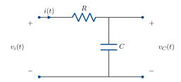
In the RC circuit, a change in v_i causes gradual change in v_o.
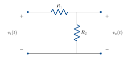
In the voltage divider, a change in v_i causes instantaneous change in v_o.
\hookrightarrow capacitor has memory:
the charge stored on its plates carries a memory of the current.
The impulse is a fictitious signal that deposits charge on the capacitor instantaneously:
q_c = \int i_c(t)\,\mathrm{d}t
So if i_c(t) = \delta(t), \;q_c(0) = \displaystyle\int_{0^-}^{0^+}\!\delta(t)\,\mathrm{d}t = 1.
This means an impulse response (inhomogeneous ODE) is equivalent to an initial condition response (homogeneous ODE).
This holds generally for LTI systems. Let’s see how on the RC circuit above.
v_i(t) = v_R + v_C
v_R = iR
i = \frac{\mathrm{d}}{\mathrm{d}t}C v_C.
So
v_i(t) = v_C(t) + \frac{\mathrm{d}}{\mathrm{d}t}RC v_C(t).
Now let v_i(t) = \delta(t).
\delta(t) = v_C(t) + \frac{\mathrm{d}}{\mathrm{d}t}RC v_C(t).
Integrate both sides on [0^-, 0^+].
\int_{0^-}^{0^+}\!\delta(t)\,\mathrm{d}t = \underbrace{\int_{0^-}^{0^+}\! v_C(t)\,\mathrm{d}t}_{=\,0} + RC\,v(0)
1 = RC\,v(0)
v(0) = \frac{1}{RC}.
Impulse at t=0 deposits an initial condition.
We can use this to calculate the impulse response, by solving
\frac{\mathrm{d}}{\mathrm{d}t}RC v_C(t) + v_C(t) = 0, \qquad v_C(0) = \frac{1}{RC} \qquad(3)
Let v_C(t) = \alpha e^{-\beta t}.
\frac{\mathrm{d}}{\mathrm{d}t}v_C = -\beta\alpha e^{-\beta t}.
Sub in (3):
-RC\beta\alpha e^{-\beta t} = -\alpha e^{-\beta t}
RC\beta = 1 \iff \beta = \frac{1}{RC}.
Use the initial condition to find \alpha:
v_C(0) = \alpha e^{0} = \frac{1}{RC}.
So the impulse response is
v_C(t) = \frac{1}{RC}\,e^{-\frac{1}{RC}t} =: h(t).
h(t) is the usual notation we’ll use for impulse response.
④ ODE descriptions of LTI systems
The same principle holds for nth order differential equations. For
a_n y^{(n)}(t) + a_{n-1}y^{(n-1)}(t) + \cdots + a_0 y(t) = \delta(t)
with the system at rest before t=0, the impulse deposits an initial condition on the 2nd highest derivative:
y^{(n-1)}(0^+) = \frac{1}{a_n}, \qquad y^{(n-2)}(0^+) = \cdots = y(0^+) = 0.
If we also allow derivatives of the input:
\begin{aligned} &a_n y^{(n)}(t) + a_{n-1}y^{(n-1)}(t) + \cdots + a_0 y(t) \\[2pt] &\qquad = b_m u^{(m)}(t) + b_{m-1}u^{(m-1)}(t) + \cdots + b_0 u(t) \end{aligned}
with given initial conditions y^{(n-1)}(0), y^{(n-2)}(0), \dots, y(0), we have a description for a large class of useful systems, including all of the circuits we’ve seen so far.
- n is called the order of the system,
- the a_i and b_i are called the coefficients of the system,
- such systems are always time-invariant,
- if the initial conditions are all 0, the system is linear,
- this gives an implicit description of the map from u to y. In weeks 5 & 6 we’ll develop an explicit description.
③ LTI systems and sinusoids
Back to our RC circuit. Let’s plug in a complex sinusoidal voltage and see what happens.
v_i(t) = v_C(t) + \frac{\mathrm{d}}{\mathrm{d}t}RC v_C(t).
Let v_i(t) = e^{j\omega t} = \cos(\omega t) + j\sin(\omega t).
Guess a solution v_C(t) = G e^{j\omega t} for some G \in \mathbb{C} — a sinusoid of the same frequency.
e^{j\omega t} = G e^{j\omega t} + \frac{\mathrm{d}}{\mathrm{d}t}RCG e^{j\omega t}
e^{j\omega t} = G e^{j\omega t} + j\omega RCG e^{j\omega t}
1 = G + j\omega RCG \qquad (e^{j\omega t} \neq 0)
G(j\omega) = \frac{1}{1 + j\omega RC}.
Why is Ge^{j\omega t} always such a good guess?
Consider an arbitrary LTI system mapping u to y.
Let u(t) = e^{j\omega t} = \cos(\omega t) + j\sin(\omega t).
Time invariance: u(t-\tau) \longmapsto y(t-\tau).
For this input,
\begin{aligned} u(t-\tau) &= e^{j\omega(t-\tau)} = e^{j\omega t}e^{-j\omega\tau} \\[2pt] &= e^{-j\omega\tau}u(t). \end{aligned}
This is the input u scaled by e^{-j\omega\tau}.
By linearity, y(t-\tau) = e^{-j\omega\tau}y(t).
Set t=0 and relabel -\tau = t, then
y(t) = e^{j\omega t}y(0),
where y(0) is G(j\omega) in the example above.
LTI systems always map a sinusoid to a sinusoid of the same frequency.
Let’s think about this in terms of our matrix \longleftrightarrow system analogy.
| matrix | LTI system |
|---|---|
| y = Au | y(t) = G(u(t)) |
| If u is an eigenvector, y = Au = \lambda u | If u = e^{j\omega t}, y = G(j\omega)\,e^{j\omega t} |
| A scales u to get y. | G scales u to get y. |
| e^{j\omega t} is an eigenvector! |
Matrices are hard in general, but diagonal matrices are easy, they simply scale each entry of the vector. How do we diagonalise a matrix? We find a basis of eigenvectors.
Over the last three weeks, we’ve seen that time domain signals & systems are hard to analyse. We’ve just discovered that the eigenvectors of an LTI system are sinusoids. Can we use this to somehow “diagonalise” the system and make the analysis less difficult, the same as we would do for a matrix?
YES! This is what the Fourier Transform does. We will build this over the next three weeks.
⑤ Block diagrams and interconnections
Block diagrams or signal flow diagrams describe the exchange of signals between systems.
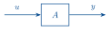
System A with input u and output y.
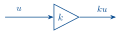
A static gain k.
A cascade interconnection.
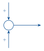
The sum of two signals.
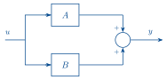
A parallel interconnection.
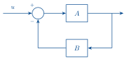
A negative feedback interconnection (the subject of control systems).
Extra example: impulse response of an RLC circuit
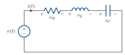
Let’s consider v_C to be the output.
v(t) = v_R + v_L + v_C \qquad \text{(KVL)}
i = C\frac{\mathrm{d}}{\mathrm{d}t}v_C
v_L = L\frac{\mathrm{d}}{\mathrm{d}t}i
v_R = Ri
Combining, KVL becomes:
v(t) = L\frac{\mathrm{d}}{\mathrm{d}t}i + Ri + v_C \qquad(4)
Or
v(t) = LC\frac{\mathrm{d}^2}{\mathrm{d}t^2}v_C(t) + RC\frac{\mathrm{d}}{\mathrm{d}t}v_C(t) + v_C.
Now assume the circuit is at rest and we apply an impulse voltage.
Imagine what v(t) = \delta(t) does to the circuit around t=0.
Integrate (4):
\int_{0^-}^{0^+}\!\delta(t)\,\mathrm{d}t = \int_{0^-}^{0^+}\! L\frac{\mathrm{d}}{\mathrm{d}t}i(t) + \underbrace{Ri(t) + v_C(t)}_{\text{assume finite}}\,\mathrm{d}t
The underbraced terms give 0, as we are integrating over an infinitesimal interval. So
1 = Li(0)
i(0) = \frac{1}{L}.
Now,
v_C(0) = \frac{1}{C}\int_{0^-}^{0^+}\! i(t)\,\mathrm{d}t = 0.
Conclusion: the impulse at 0 deposits an initial condition on the inductor: the 2nd highest derivative of v_C.
We can now solve the impulse response of the circuit as an initial condition response:
\frac{\mathrm{d}^2}{\mathrm{d}t^2}v_C(t) + \underbrace{\frac{R}{L}}_{2\zeta\omega_n}\frac{\mathrm{d}}{\mathrm{d}t}v_C(t) + \underbrace{\frac{1}{LC}}_{\omega_n^2}v_C(t) = 0 \qquad(5)
with v_C(0) = 0,
v_C'(0) = \frac{1}{C}i(0) = \frac{1}{LC}.
We suspect the solution will be some kind of exponential/sinusoid combo, so let’s guess a solution
e^{st} \qquad \text{for some } s \in \mathbb{C}.
Substituting in (5):
s^2 e^{st} + 2\zeta\omega_n s\, e^{st} + \omega_n^2 e^{st} = 0
e^{st} \neq 0, so
s^2 + 2\zeta\omega_n s + \omega_n^2 = 0 \qquad(6)
\begin{aligned} s &= \frac{-2\zeta\omega_n \pm \sqrt{4\zeta^2\omega_n^2 - 4\omega_n^2}}{2} \\[2pt] &= -\zeta\omega_n \pm \omega_n\sqrt{\zeta^2 - 1}. \end{aligned}
The roots of (6) are called the poles of the system (recall pole position & behaviour from week 1).
Suppose R = 6\,\Omega, L = 1\,\mathrm{H}, C = 40\,\mathrm{mF}.
Then s = -3 \pm 4j.
so the response is
v_C(t) = A e^{(-3+4j)t} + B e^{(-3-4j)t}.
v_C(0) = 0, so A + B = 0. \quad\Rightarrow\quad B = -A
v_C'(0) = \dfrac{1}{LC}, so
(-3+4j)A - (-3-4j)A = \frac{1}{LC}
A = \frac{1}{8j\,LC}
= -3.125j
so we have
\begin{aligned} v_C(t) &= A e^{(-3+4j)t} + \bar{A}\, e^{(-3-4j)t} \qquad\text{(complex conjugates!)} \\[2pt] &= 2\operatorname{Re}\!\big(A e^{(-3+4j)t}\big) \\[2pt] &= 6.25\, e^{-3t}\sin(4t)\,H(t) \end{aligned}
H(t) encodes that the signal is 0 before t=0.